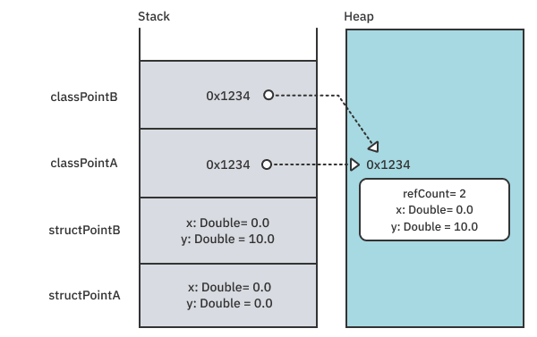
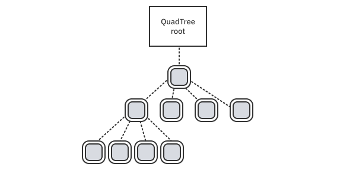
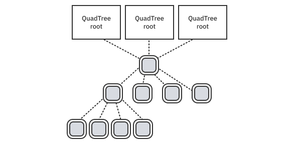
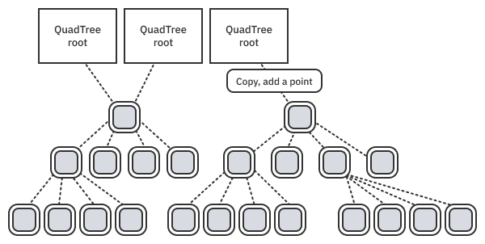
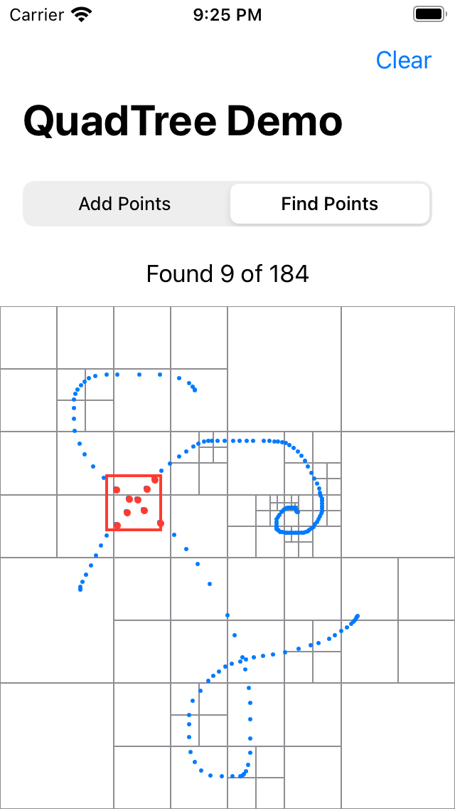

第2章：类型与变异¶
什么是类型？它是数据的逻辑分组，以及你可以对其进行的一系列操作。你可以使用标准类型和自定义类型来构建你在Swift中的程序。在你的程序运行之前，Swift编译器通常可以使用类型信息保证正确性，这个过程被称为类型检查。
初学者，如果第一次处理不熟悉的类型，如Optional，可能会发现类型检查的错误很繁重，而且略显神秘。但通过类型检查你的程序，类型系统确保你正确使用软件，并实现许多优化。Swift的类型系统是安全和高效代码的关键。随着你成为一个更高级的从业者，你的编程观点可能会变得更加以类型为中心。
Swift强调其类型的可变值语义。在本章中，你将回顾Swift提供的重要的名义类型。值类型（枚举和结构）、引用类型（类）和突变规则共同作用，允许可变值语义，你可以在你自己的Swift类型中采用。
基本类型¶
Swift类型系统由少量的基本类型组成。这些类型包括所谓的命名类型（协议、枚举、结构和类），以及复合类型（函数和元组）。这些类型中的每一个都有一套独特的属性，使其在特定情况下有用。
正如前一章所讨论的，所有的标准库类型，如Bool、Int、Double、String、Optional、Array和Dictionary都是这些基本类型的巧妙组合，这是非常不可思议的。这说明了你能用它们做什么的力量。
Note
协议和泛型也很了不起。本书有整整一章是关于协议类型和泛型的，因为它们是如此强大和重要。在第4章"泛型"中，你还会简要地看一下类型的类型，或元类型。
在这一章中，你将探索由类、结构和枚举创建的命名的具体类型的属性。尽管其中有些内容可能是复习，但它将提供一个平台来探索一些更高级的主题。
用类型建模¶
二维几何是探索类型系统的一个很好的问题域，因为它在数学上有很好的定义，而且很容易被可视化。首先，打开Geometry的启动playground，为一个点类型添加以下两个定义。
struct StructPoint {
var x, y: Double
}
class ClassPoint {
var x, y: Double
init(x: Double, y: Double) {
(self.x, self.y) = (x, y)
}
}
这两种类型都是在X-Y平面上为一个点建模。但已经有五个基本的区别，你应该知道。
差异1：自动初始化¶
第一个，最明显的区别是在类的类型中需要一个初始化器。如果你不声明一个，编译器将为结构声明一个内部的成员-的初始化器。这个初始化器只是一个一个地分配成员的属性。你必须为你的类定义一个初始化器，因为x和y需要被初始化。
Note
如果你为一个结构定义了一个初始化器，编译器不会为你定义成员的初始化器。一个常见的技巧是，如果你想同时得到编译器生成的初始化器和自定义的初始化器，可以在一个扩展中定义你的初始化器。
差异2：复制语义¶
第二个主要的可能也是最重要的区别是复制语义。类有引用语义，结构有值语义。值语义说，给定两个实例A和B，不可能通过对A的改变来影响B的值，反之亦然。
通过引用语义，你可以从另一个对象影响一个对象。通过在你的Playground末端添加这个并运行它来查看一个例子：
let structPointA = StructPoint(x: 0, y: 0)
var structPointB = structPointA
structPointB.x += 10
print(structPointA.x) // not affected, prints 0.0
let classPointA = ClassPoint(x: 0, y: 0)
let classPointB = classPointA
classPointB.x += 10
print(classPointA.x) // affected, prints 10.0
在引用语义下，改变classPointB会影响classPointA，因为两个变量都指向同一个底层内存。这种现象在structPointA和structPointB是具有值语义的独立副本的结构中不存在。
差异3：突变的范围¶
Swift支持instance-level突变模型。这意味着，通过使用引入者关键字let而不是var，你可以锁定一个实例，使其不被突变。这就是为什么你必须在上面的代码中用var声明structPointB。如果你不这样做，你就不能在x坐标上添加10。编译器会以错误的方式阻止这一点。
Note
你可以用类的版本来修改x坐标，即使let引入了classPointB。变异控制适用于引用本身，而不是底层属性数据。
通过不变性的值语义¶
从上面的例子中你知道，类是具有引用语义的引用类型。有没有可能赋予一个类以值语义呢？答案是肯定的，最简单的方法是通过不可变性。只要用let来声明所有的属性，就可以使它们变得不可更改。因为你不能从任何地方修改任何东西，这就满足了值语义的定义。功能性语言经常使用严格的不可变性来实现值语义，但要以性能为代价。
Note
Objective-C使用一个type-lvel突变模型。例如，NSString是不可变的。但是从NSString派生出来的NSMutableString，增加了可变性。然而，如果你有一个指向NSString的指针，你不能100%确定它不会指向另一个客户端可能修改的NSMutableString。防御性拷贝是必要的，这使得这个编程模型的效率较低，安全性较差，而且容易出错。
在StructPoint中用var声明x和y属性的好处是，如果你用var声明实例，它们可以是可变的，而用let则是不可变的。这就是为什么你通常想用var来声明结构的属性，因为你可以在使用点上控制每个实例的可变性。
差异4：堆与栈的区别¶
一般的经验法则是，类使用堆内存，而结构和枚举使用栈内存。因为栈分配比堆分配快几个数量级，这就是值类型获得快速声誉的地方。
每个执行线程都有自己的栈，而栈只通过修改最上面的元素来改变。因此，向栈分配和取消分配不需要昂贵的并发锁或花哨的分配策略。分配和取消分配可以通过一条加减指令在一个时钟刻度内完成。
相比之下，堆是由多个线程共享的，需要由并发锁来保护。操作系统必须防止堆碎片化，如果你分配和取消分配不同大小的内存块，就会发生这种情况。因此，即使堆分配已经被高度优化，但它最终是不确定的，可能需要数千甚至数百万条指令来执行。
下面是上面的代码在内存中分配的示意图，可能是这样的：

结构被放在栈中，而类则同时放在栈和堆中。由于引用类型是共享的，所以堆内存中的引用计数可以跟踪对象的生命周期。只有当引用计数下降到零时，deinit才会被调用，内存才会被取消分配。
Note
类的堆与结构和枚举的栈只是一个一般的经验法则。正如你在上一章看到的，Swift编译器首先在堆上分配一切，然后对对象的生命周期进行推理，以确定它是否可以在堆上分配。例如，一个在本地结构上关闭的转义闭包将需要把该对象放在堆上，以延长该结构的生命周期，使之超出其范围。另一方面，一个被创建的类，执行了一些动作，然后超出了范围，可能会被完全优化掉，只包括完成操作的必要指令。
差异5：生命期和身份¶
值类型，如结构和枚举，一般都生活在栈中，复制起来很便宜。值没有寿命的概念，也没有内在的身份。引用是有寿命的，正因为如此，你可以为它们定义一个deinit函数。它们也自动有一个身份，因为它们驻扎在内存的一个特定位置，你可以用它来识别它们。
Note
有可能通过指定一个独特的财产属性来赋予一个值类型的身份。Identifiable协议，增加了一个Hashable（和Equatable）id属性，可以做到这一点。SwiftUI框架定义了属性包装器，如@State，除其他外，它将寿命赋予简单的值类型。
更多的差异¶
类和结构之间还有其他的区别，这个简单的例子并没有说明。最明显的是继承，类用它来实现运行时的多态性。类是动态地分配它们的方法，而结构则不会这样做，除非你使用一个协议。对于不属于协议的结构方法，调度是静态的。你将在下一章学习更多关于协议调度的知识。
Note
你可以将类中的方法标记为final，这可能会有一个副作用，就是将它们去虚拟化，使它们运行得更快。编译器可以使用来自访问控制和整个模块优化的提示来证明一个方法不能被重写并对其进行优化。
定义一个Point¶
鉴于以上的区别，用一个轻量级的值来代表你的Point可能是一个好的选择。采用这种设计吧。把这个添加到playground上：
struct Point: Equatable {
var x, y: Double
}
struct Size: Equatable {
var width, height: Double
}
struct Rectangle: Equatable {
var origin: Point
var size: Size
}
这定义了Point、Size和Rectangle，具有Equatable的一致性。对于值类型，如果存储的属性也是Equatable类型，编译器将为你生成所需的==方法。引用类型（又称类）需要你自己为Equatable编写==，为Hashable编写hash(into:)。
值语义的另一个基本特征是它们的组合。Rectangle有值语义，因为它是一个值类型，Point和Size都有值语义。此外，因为Swift数组有值语义，所以Rectangle的数组也有值语义。
Note
代码合成发生在编译器的类型检查阶段。当你采用一个协议时，编译器会检查该类型是否满足（见证）该协议。如果不符合，它通常会发出一个错误。在Equatable的特殊情况下，如果该类型是一个值类型，它将尝试合成==，如果所有存储的属性也是Equatable。类似的过程发生在Hashable、Codable和CaseIterable。与其他不同的是，Codable同时合成值类型和引用类型的代码。
函数和方法¶
到目前为止，自定义类型只有以存储属性的形式存在的数据。但是当你添加操作时，事情就变得有趣了。为了热身，给Point类型添加几个方法。
// 1st draft version
extension Point {
func flipped() -> Self {
Point(x: self.y, y: self.x)
}
mutating func flip() {
let temp = self
self.x = temp.y
self.y = temp.x
}
}
这里有两个简单的方法来交换一个点的x和y坐标。这些方法的名称遵循Swift API设计指南所描述的变异和非变异对的流畅用法。
函数flipped()使用了self，而函数flip既使用又修改了self。由于这个原因，你需要声明它是mutating。这两个函数都包含了交换的逻辑，这是重复的。
用这个版本的代码替换上面的代码，就可以把事情更简洁了：
extension Point {
func flipped() -> Self {
Point(x: y, y: x)
}
mutating func flip() {
self = flipped()
}
}
对self不必要的引用没有了，交换逻辑只在flipped中进行。在这种情况下，实现是微不足道的，所以重复并不是什么大事。但是当你有非变异和变异的函数对，而且比较复杂时，你会欣赏这种模式。
变异和self¶
对于一个类型方法，Swift编译器会将self: Self作为一个无形的参数。这就是为什么你可以在函数体中使用它。对于一个mutating方法，Swift传递一个不可见的self: inout Self。如果你还记得，inout的语义是在进入函数时做一个拷贝，然后在退出时做一个拷贝。这个时间对应于属性观察者willSet和didSet被调用。此外，inout有效地从你的函数中产生了一个输入和额外的返回值。
Note
类上的方法（即引用类型）不使用inout。如果你想想self: inout Self的作用，这就说得通了。在引用类型上的inout只能防止整个实例被重新分配给另一个实例。
静态方法和属性¶
通过在playground中添加这个，使用扩展为你的点类型添加一个静态属性和方法：
extension Point {
static var zero: Point {
Point(x: 0, y: 0)
}
static func random(inRadius radius: Double) -> Point {
guard radius >= 0 else {
return .zero
}
let x = Double.random(in: -radius ... radius)
let maxY = (radius * radius - x * x).squareRoot()
let y = Double.random(in: -maxY ... maxY)
return Point(x: x, y: y)
}
}
这段代码创建了一个静态属性zero，它只是原点的一个点。静态方法random创建一个以指定半径为界限的随机点。x值首先被固定下来，你使用勾股定理来确定允许的y值的最大界限，这样它就能保持在圆内。
走向确定性¶
Swift默认的Double.random(in:)使用SystemRandomNumberGenerator()，这在密码学上是安全的。这个选择是一个很好的默认值，因为它可以防止潜在的攻击者猜出你的随机数。
有时，你希望你的随机值是确定的和可重复的。这种重要性对于持续集成测试来说尤其如此。你希望这些类型的测试在应对代码变化（糟糕的合并或重构）时失败，而不是因为一个新的、未尝试过的输入值。幸运的是，Swift标准库通过重载方法Double.random(in:using:)支持你自己的生成器，其中using参数需要一个你选择的伪随机数生成器。
尽管标准库不包括这些可播种的伪随机数源之一，但自己制作一个也很容易。网上有很多关于制作好的随机生成器的研究。这里是维基百科上的一个不错的随机发生器。折叠共轭发生器（https://en.wikipedia.org/wiki/Permuted_congruential_generator）可以从列出的C代码翻译成Swift。把这个添加到你的playground上：
struct PermutedCongruential: RandomNumberGenerator {
private var state: UInt64
private let multiplier: UInt64 = 6364136223846793005
private let increment: UInt64 = 1442695040888963407
private func rotr32(x: UInt32, r: UInt32) -> UInt32 {
(x &>> r) | x &<< ((~r &+ 1) & 31)
}
private mutating func next32() -> UInt32 {
var x = state
let count = UInt32(x &>> 59)
state = x &* multiplier &+ increment
x ^= x &>> 18
return rotr32(x: UInt32(truncatingIfNeeded: x &>> 27),
r: count)
}
mutating func next() -> UInt64 {
UInt64(next32()) << 32 | UInt64(next32())
}
init(seed: UInt64) {
state = seed &+ increment
_ = next()
}
}
这段代码包含一些数学细节，对本书来说并不重要。(然而，你会在第五章"数字和范围"中看到更多关于C风格的不安全二进制算术，如&>>、&*和&+）。需要注意的关键是你如何将内部细节和状态标记为私有。作为这个类型的用户，你只需要知道它的种子是一个64位的整数，并且它产生一个确定性的64位伪随机整数流。这种隐藏是封装的作用；它降低了复杂性，使类型易于使用和推理。你会在本书中看到封装的使用，并在第14章"API设计技巧和窍门"中进一步讨论。
为了使用这个伪随机源，创建一个Point.random的重载。把它添加到你的playground上：
extension Point {
static func random(inRadius radius: Double,
using randomSource:
inout PermutedCongruential) -> Point {
guard radius >= 0 else {
return .zero
}
let x = Double.random(in: -radius...radius,
using: &randomSource)
let maxY = (radius * radius - x * x).squareRoot()
let y = Double.random(in: -maxY...maxY,
using: &randomSource)
return Point(x: x, y: y)
}
}
它很像以前的版本，使用系统的随机数发生器。作为一个静态方法，random(in:using:)也不接触Point的实例。但是请注意，由于randomSource是一个inout参数，所以可变的状态可以流经这个函数。这种通过参数来处理副作用的方式比使用全局变量来跟踪伪随机状态的设计好得多。它明确地将副作用浮现给用户，使其可以被控制。
Note
不幸的是，这个随机函数是特定于具体类型PermutedCongruential的。在第四章"泛型"中，你会看到与任何符合RandomNumberGenerator的类型合作的技术，包括SystemRandomNumberGenerator()。如果你想看到这个函数的泛型编写，并且没有逻辑重复，请查看本章最后的资源文件夹中的playground RandomPointGeneric。
在你的playground上用这段代码测试确定性的随机数：
var pcg = PermutedCongruential(seed: 1234)
for _ in 1...10 {
print(Point.random(inRadius: 1, using: &pcg))
}
这些看起来像随机数，但却是可重复的。第十个随机点总是Point(x: 0.43091531644250813, y: 0.3236366519677818)，给定的起始种子为1234。
枚举¶
Swift枚举是另一种强大的值类型，可以让你对有限的状态集进行建模。把这个添加到你的playground：
enum Quadrant: CaseIterable, Hashable {
case i, ii, iii, iv
init?(_ point: Point) {
guard !point.x.isZero && !point.y.isZero else {
return nil
}
switch (point.x.sign, point.y.sign) {
case (.plus, .plus):
self = .i
case (.minus, .plus):
self = .ii
case (.minus, .minus):
self = .iii
case (.plus, .minus):
self = .iv
}
}
}
这段代码为二维平面中的象限创建了一个抽象的概念。CaseIterable的一致性让你可以访问一个数组，allCases。Hashable意味着你可以把它作为Set的一个元素或Dictionary的键。你可以让初始化器失效，因为x轴或y轴上的点没有被定义为在一个象限内。一个可选的初始化器让你自然地记录这种可能性。
用这个试试吧：
Quadrant(Point(x: 10, y: -3)) // evaluates to .iv
Quadrant(.zero) // evaluates to nil
类型作为文档¶
类型可以作为文档。例如，如果你有一个返回Int的函数，你不需要担心这个函数是否会返回3.14159或"长颈鹿"。它就是不可能发生。在某种意义上，编译器排除了所有这些疯狂的可能性。
Note
一个更著名的软件工程失败发生在1999年的火星气候轨道器。加利福尼亚州喷气推进实验室的工程师在编写他们的函数时，使用了以pound-seconds为单位的公制冲力值。相反，位于科罗拉多州的洛克希德-马丁宇航公司的工程师则用英制单位磅-秒来编写他们的函数。想象一下，如果这两个小组用一个类型来明确单位。这样做可能会避免代价高昂（1.25亿美元以上）的错误，导致太空探测器跳出（或在火星大气层中烧毁）。
Foundation有一套可扩展的类型来处理常见的物理单位，如长度、温度和角度。考虑一下角度，它可以用各种单位来表示。把这个加到Playground上：
let a = Measurement(value: .pi/2,
unit: UnitAngle.radians)
let b = Measurement(value: 90,
unit: UnitAngle.degrees)
a + b // 180 degrees
变量a是一个用弧度表示的直角，b是一个用度数表示的直角。你可以把它们加在一起，看到它们是180度。+运算符在添加数值之前将它们转换为基本单位。
当然，Swift允许你定义标准数学函数的重载。你可以做一个类型安全的cos()和sin()的版本。
func cos(_ angle: Measurement<UnitAngle>) -> Double {
cos(angle.converted(to: .radians).value)
}
func sin(_ angle: Measurement<UnitAngle>) -> Double {
sin(angle.converted(to: .radians).value)
}
cos(a) // 0
cos(b) // 0
sin(a) // 1
sin(b) // 1
该函数接收一个角度，并在将其传递给标准的超越式cos()和sin()函数之前将其明确转换为弧度。有了这个新的API，编译器可以检查以确保你传递的是角度类型而不是一些无意义的东西。
Note
有几个流行的框架对角度类型进行了处理。除了基金会的Measurement类型外，SwiftUI还定义了一个Angle，明确地用度数或弧度进行初始化。我们建议在官方的Swift数字包中加入一个通用版本，以抽象出所有不同的浮点类型。
改进类型的人机工程学¶
Swift的一个好处是，你可以扩展现有类型的功能和互操作性，而你甚至没有这些类型的源代码。例如，假设你希望你的程序能处理极坐标。你会经常使用角度，所以添加这个：
typealias Angle = Measurement<UnitAngle>
extension Angle {
init(radians: Double) {
self = Angle(value: radians, unit: .radians)
}
init(degrees: Double) {
self = Angle(value: degrees, unit: .degrees)
}
var radians: Double {
converted(to: .radians).value
}
var degrees: Double {
converted(to: .degrees).value
}
}
typealias给你一个更短的、描述性的角的拼法。你现在可以回去改进你的sin和cos的实现，像这样：
func cos(_ angle: Angle) -> Double {
cos(angle.radians)
}
func sin(_ angle: Angle) -> Double {
sin(angle.radians)
}
你可能会同意，这些看起来更漂亮。现在，你可以定义一个极坐标类型：
struct Polar: Equatable {
var angle: Angle
var distance: Double
}
因为你想在xy坐标和极坐标之间轻松翻转，你可以为这些添加类型转换的初始化器：
// Convert polar-coordinates to xy-coordinates
extension Point {
init(_ polar: Polar) {
self.init(x: polar.distance * cos(polar.angle),
y: polar.distance * sin(polar.angle))
}
}
// Convert xy-coordinates to polar coordinates
extension Polar {
init(_ point: Point) {
self.init(angle: Angle(radians: atan2(point.y, point.x)),
distance: hypot(point.x, point.y))
}
}
注意到你的抽象是如何相互建立的，使工作环境变得更加强大。你的类型让你逐层隐藏复杂性。
现在，你可以很容易地从xy坐标转到极坐标，反之亦然，像这样：
let coord = Point(x: 4, y: 3)
Polar(coord).angle.degrees // 36.87
Polar(coord).distance // 5
强类型意味着你不会意外地把极坐标和xy坐标混为一谈，但当你打算这样做时，你仍然可以在两者之间轻松切换。
关联值¶
Swift中的枚举是相当强大的，因为它们可以让你把信息与特定情况联系起来。例如，你可以创建一个固定的形状集。
enum Shape {
case point(Point)
case segment(start: Point, end: Point)
case circle(center: Point, radius: Double)
case rectangle(Rectangle)
}
正如你所看到的，组成类型很容易。你可以简洁地对你的应用程序中的有效状态进行建模，甚至可以防止无效的状态被代表，从而进行编译。
使用RawRepresentable。¶
在你的工具箱中还有一个必不可少的工具。你可能已经在不知不觉中把RawRepresentable用于枚举。打开启动器的玩法RawRepresentable，添加以下内容。
enum Coin {
case penny, nickel, dime, quarter
}
当你用整数、字符或字符串返回枚举时，由于编译器的魔力，它变成了RawRepresentable。用这个来代替之前的定义：
enum Coin: Int {
case penny = 1, nickel = 5, dime = 10, quarter = 25
}
作为RawRepresentable意味着你可以创建和获得原始值。这也意味着该类型是Equatable、Hashable和Codable免费的。
let lucky = Coin(rawValue: 1)
lucky?.rawValue // returns Optional(1)
let notSoMuch = Coin(rawValue: 2)
你可以直接使用RawRepresentable来创建简单的检查类型。考虑一下这个例子：
struct Email: RawRepresentable {
var rawValue: String
init?(rawValue: String) {
guard rawValue.contains("@") else {
return nil
}
self.rawValue = rawValue
}
}
这个简单的类型提供了一种文档形式。考虑一下使用它的一个函数的签名：
func send(message: String, to recipient: Email) throws {
// some implementation
}
这个函数更容易使用，因为参数标签使message和recipient的位置很清楚，而且由于编译器可以检查特定的类型，所以很难误用。Email的类型意味着它只可能传递格式良好的电子邮件地址。(在这个例子中，检查只是为了确保地址中有一个@，但你可以让它任意地严格。)
与其拥有像isValid这样的属性，不如让你的自定义类型的初始化器可以失败，要么返回nil，要么在无法创建有效实例时抛出一个更具体的错误。这种明确的失败模式允许你设置你的代码，使编译器强迫你检查错误。其回报是这样的。当你写一个使用一个类型的函数时，你不必担心半生不熟的实例可能是无效的。这种模式将数据验证和错误处理推到你的软件栈的上层，让下层有效地运行，而不需要额外的检查。
练习¶
这里有几个快速练习来检查你的理解。你可以使用启动器Playground Exercises来让你开始。它导入了你到目前为止所做的类型。像往常一样，在看最终版本的答案之前，最好先诚实地试一试。
- 在单位圆内生成
100个随机点。第二象限包含多少个？用代码演示一下解决方案。使用PermutedCongruential与种子4321，使你的答案可以重复。 1.5升里有多少个杯子？使用Foundation的Measurement类型来计算。- 为
Quadrant创建一个初始化器，接受一个极坐标。
QuadTree¶
现在，你将通过为CGPoints建立一个QuadTree类型来获得更多关于类型的经验。这个例子将告诉你在使用类类型存储时如何实现可变值语义。
QuadTree是一种高效的树形数据结构，用于在一个区域内寻找点。它不需要O(n)来寻找一个匹配区域中的点，而只需要O(log n)。它通过将点放在节点（或桶）中来实现这一点。当一个节点达到最大容量并溢出时，它会创建新的子节点，将空间分成四个相等的部分。当需要寻找点的时候，你可以有效地二进制搜索这些节点。
最后的演示应用程序将让你添加一些点，然后通过拖动你的手指在一个区域内寻找点。它将看起来像这样：

这些点是QuadTree中的点，矩形显示了树如何分割空间。较重的正方形和较大的圆点是一组找到的点，你可以在周围移动。
当画成传统的树形时，QuadTree的数据结构看起来像这样：

每个节点有零个或四个子节点。QuadTree类型本身是一个轻量级的值类型。它有一个私有属性root，指向树顶的引用类型Node。复制一个QuadTree很便宜，因为副本共享Node引用。从图形上看，共享看起来像这样：

为了保持良好的值语义，当一个共享实例决定通过添加一个点来修改树时，它必须对树进行深度复制并添加这个点。这个过程被称为copy-on-write或有时被称为CoW。从图形上看，你最终得到的东西看起来像这样：

在这种情况下，在添加新的点之前，你先做一个副本。该节点溢出其容量，并将自己细分为四个新的子节点。
实现QuadTree¶
通过打开QuadTree Xcode启动项目，开始实现QuadTree。使用文件导航器来熟悉该项目中的文件。浏览一下这五个文件，不用太担心细节问题。
AppMain.swift：包含SwiftUI应用程序的基本定义。ContentView.swift：顶层的用户界面。它定义了用于添加或寻找点的选取器，一个显示所找到的点的数量的地方和一个清除按钮。它还包含用于插入和寻找点的拖动手势。QuadTree.swift：存根出QuadTree的定义。这是你要做的工作的地方。QuadTreeView.swift：绘制点和矩形的画布。它找到视图的大小，并将其报告给视图模型，以便将点存储在从0到1的标准化坐标中。QuadTreeViewModel.swift：将模型（你的QuadTree实例）连接到用户界面。这个文件包含你的应用程序的所谓业务逻辑。
在这一点上，你可以建立并运行该应用程序，但你还不能插入和寻找点。为了实现这一点，你需要填写QuadTree类型。
打开QuadTree.swift，其中包含一个骨架定义。
在QuadTree定义中，添加私有嵌套类Node：
private final class Node {
let maxItemCapacity = 4
var region: CGRect
var points: [CGPoint] = []
var quad: Quad?
init(region: CGRect, points: [CGPoint] = [], quad: Quad? = nil) {
self.region = region
self.quad = quad
self.points = points
self.points.reserveCapacity(maxItemCapacity)
precondition(points.count <= maxItemCapacity)
}
struct Quad {
// more to come...
}
}
嵌套类Node将为QuadTree做重活。每个节点实例保持一个region，在它溢出并将自己细分为Quad结构中包含的另外四个节点之前，最多可以容纳四个点（桶的大小）。
Note
桶的大小被设置为4，所以你可以很容易地看到正在发生什么。根据对插入和查找时间的分析，实际的实现可能会有更大的桶的大小。
接下来，在Node内的Quad定义中添加这个内容：
var northWest: Node
var northEast: Node
var southWest: Node
var southEast: Node
var all: [Node] { [northWest, northEast, southWest, southEast] }
init(region: CGRect) {
let halfWidth = region.size.width * 0.5
let halfHeight = region.size.height * 0.5
northWest =
Node(region: CGRect(x: region.origin.x,
y: region.origin.y,
width: halfWidth, height: halfHeight))
northEast =
Node(region: CGRect(x: region.origin.x + halfWidth,
y: region.origin.y,
width: halfWidth, height: halfHeight))
southWest =
Node(region: CGRect(x: region.origin.x, y:
region.origin.y + halfHeight,
width: halfWidth, height: halfHeight))
southEast =
Node(region: CGRect(x: region.origin.x + halfWidth,
y: region.origin.y + halfHeight,
width: halfWidth, height: halfHeight))
}
// more to come...
这段代码定义了Quad的四个子节点。初始化器很冗长，但它所做的就是将父区域划分为四个相等的子区域。
你需要能够深度复制Node，所以把这个初始化器和复制方法添加到Quad：
init(northWest: Node, northEast: Node,
southWest: Node, southEast: Node) {
self.northWest = northWest
self.northEast = northEast
self.southWest = southWest
self.southEast = southEast
}
func copy() -> Quad {
Quad(northWest: northWest.copy(),
northEast: northEast.copy(),
southWest: southWest.copy(),
southEast: southEast.copy())
}
这就完成了Quad的定义。
复制¶
上面的代码期望在Node上有一个copy()方法，所以现在把它添加到Node的主体中：
func copy() -> Node {
Node(region: region, points: points, quad: quad?.copy())
}
这个函数将解决四个编译器错误。令人惊奇的是，添加这个函数后，Node和Quad可以从根节点递归复制自己，一直到树上。
接下来，在Node定义中添加一个辅助方法来对Node进行细分：
func subdivide() {
precondition(quad == nil, "Can't subdivide a node already subdivided")
quad = Quad(region: region)
}
这只是把quad分配给一个实例。你在上面写的初始化器做的是矩形划分的真正工作。前提条件确保你没有细分一个已经被细分过的节点。如果计算成本低的话，检查你的假设总是一个好主意。
接下来，为Node写insert。添加这个：
@discardableResult
func insert(_ point: CGPoint) -> Bool {
// 1
if let quad = quad {
return quad.northWest.insert(point) ||
quad.northEast.insert(point) ||
quad.southWest.insert(point) ||
quad.southEast.insert(point)
}
else {
// 2
if points.count == maxItemCapacity {
subdivide()
return insert(point)
}
else {
// 3
guard region.contains(point) else {
return false
}
points.append(point)
return true
}
}
}
该函数返回一个Bool，如果它插入点，则为true，如果它不插入，则为false。
下面是该函数的工作内容的概述。
- 首先，它检查该节点是否已经被分割。如果有，该函数试图将该点插入四边形的每一个节点中。逻辑或
||短路，一插入就停止。 - 如果节点处于最大容量，它将节点细分，并再次尝试插入。
- 如果节点没有达到最大容量，它首先检查该点是否在节点负责的区域内。如果是，它就把它插入到点的数组中，并返回`true'。
你将为Node定义的最后一个方法是在一个区域内寻找点。把这个方法添加到Node类型中：
func find(in searchRegion: CGRect) -> [CGPoint] {
guard region.intersects(searchRegion) else {
return []
}
var found = points.filter { searchRegion.contains($0) }
if let quad = quad {
found += quad.all.flatMap { $0.find(in: searchRegion) }
}
return found
}
这段代码首先检查搜索区域是否与该节点所负责的区域重叠。如果没有，它就不返回任何点数。这个返回是递归的基本情况。接下来，它过滤区域内的点，并将它们添加到found列表中。最后，如果节点已经被细分，它将通过四边形并递归地调用find(in:)，在返回之前将点添加到found列表中。
实现QuadTree方法¶
现在你已经完成了Node类型，你可以实现QuadTree的方法。首先，在QuadTree的正上方添加一个私有属性count：
private var root: Node
QuadTree的初始化器指定了一个它所处理的空间区域。用这个替换掉存根的实现：
init(region: CGRect) {
root = Node(region: region)
}
接下来，将QuadTree中的find(in:)和points()替换为这些：
func find(in searchRegion: CGRect) -> [CGPoint] {
root.find(in: searchRegion)
}
func points() -> [CGPoint] {
find(in: root.region)
}
find(in:)简单地委托给根节点。points()通过从根节点往下找所有的点来收集它们。
接下来，替换regions()的占位符，该占位符返回每个Node负责的区域：
private func collectRegions(from node: Node) -> [CGRect] {
var results = [node.region]
if let quad = node.quad {
results += quad.all.flatMap { collectRegions(from: $0) }
}
return results
}
func regions() -> [CGRect] {
collectRegions(from: root)
}
regions()调用私有辅助方法collectRegions(from:)，它递归地收集所有节点的所有区域。
最后，用这个实现替换一个插入方法：
@discardableResult
mutating func insert(_ point: CGPoint) -> Bool {
if !isKnownUniquelyReferenced(&root) {
root = root.copy()
}
guard root.insert(point) else {
return false
}
count += 1
return true
}
这个函数被标记为@discardableResult，因为客户可能不希望检查插入是否成功。唯一可能失败的情况是，你试图插入一个在QuadTree初始化器指定区域之外的点。
这段代码是copy-on-write神奇发生的地方。Swift有一个特殊的函数，isKnownUniquelyReferenced()，如果只有一个实例，则返回true。如果有一个以上的实例，你需要制作一个底层树的副本。然后，你可以添加点。
属性count的存在是为了在不递归遍历所有节点的情况下知道QuadTree的点的数量，这很便宜O(1)。它只有在插入成功时才会被递增。插入的成功与否取决于QuadTree初始化时的区域大小。
Note
为了保持突变的值语义，你必须为每个突变的方法做一个底层存储的深度拷贝。这是一个优化，如果不是共享的，就不要和实例一起拷贝。如果周围有额外的副本，这种优化就会被阻止。SwiftUI框架有特殊的属性包装器@State和@Published，用于管理UI更新。不幸的是，这些包装器制作了一个额外的副本，干扰了isKnownUniquelyReferenced的优化。如果你仔细观察QuadTreeViewModel.swift，你会发现quadTree不是一个@Published属性，而是直接调用objectWillChange.send()来处理UI更新。这样做可以防止发生额外的复制，在添加了几百个点之后，用户界面会变慢。
建立并运行该应用程序。拖动你的手指来添加一些点。如果你逐一点击添加点，你会看到一个区域在第五次点击时就会自我细分，因为节点超出了最大容量。但是在一个区域中寻找点是QuadTree的闪光点。它不需要遍历整个点列表，而是可以快速关注某个特定区域。你可以通过切换到查找模式并拖动小的查找框来试试。快速找到一个区域的点是QuadTree被用于碰撞检测和压缩应用的原因。

关键点¶
Swift是一种强类型语言，允许编译器在你的程序运行前检查其正确性。你在处理类型方面做得越好，写出正确的程序就越容易。
以下是本章中需要记住的一些关键点：
- 结构、枚举和类是基本的命名类型，
Swift用它们来制造其他每一种具体类型，包括Bool、Int、Optional、String、Array等。 - 创建自定义类型来优雅地解决你领域中的问题。
- 结构和枚举是值类型。类是引用类型。
- 任何类型都可以被设计成具有值语义。
- 获得值语义的最直接的方法是使用一个值类型（结构或枚举），它只包含具有值语义的其他类型。
- 所有的标准类型，包括
String、Array、Set和Dictionary，都已经有了值语义，使得它们很容易被组合成具有值语义的大类型。 - 让一个类变得不可改变是赋予引用类型值语义的一种方式。
- 值类型通常是在栈中复制的，而引用类型是在堆中分配的，并且是引用计数的。
- 引用类型有一个内置的生命周期和身份的概念。
- 实例方法秘密地传入自我。
- 值类型的变异实例方法传递
inout self。 - 枚举模拟了一个有限的状态集。
- 避免初始化半生不熟的、无效的对象。相反，创建失败的初始化器。
- 一套好的类型可以作为编译器可检查的文档。
- 基础的
Measurement类型通过将它们定义为具体类型，使不同单位的工作不易出错。 Swift让你改善你甚至不拥有的类型的使用工效。- 协议
RawRepresentable让你创建简单、有表现力的类型。 - 写时复制（Copy-on-write）是一种赋予引用类型变异值语义的方法。